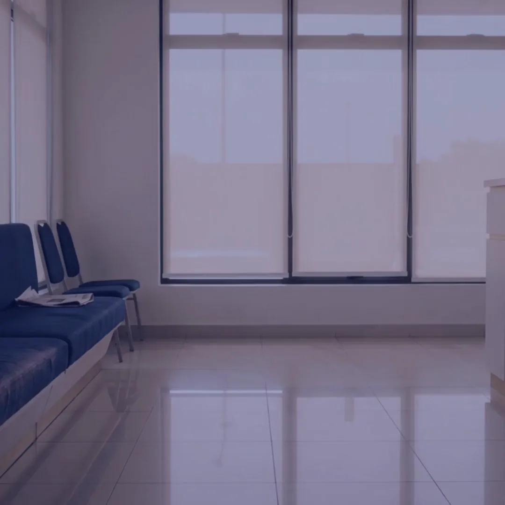

Walid Healthcare Group
Hospital-grade minor surgery, done in a day.
Surgeon-led day-care across our Central and Northern centres. The smart choice hundreds of thousands already trust.
- 561Kon TikTok
- 119Kon Facebook
- 4.9★Google rating
Who we are
A surgeon-led healthcare group, trusted by hundreds of thousands.
Poliklinik Walid is a network of ten clinics under Walid Healthcare Group Sdn. Bhd. We are built around day-care minor surgery: you are assessed by a surgeon, treated in one visit and home the same day.
Our surgical centres in Ampang, Seberang Perai, Tasek Gelugor and Sungai Petani are backed by general practice across the network, with aesthetics and antenatal care, led by a dedicated specialist, growing alongside.
- 10branches, Central and North
- 561KTikTok followers
- 119KFacebook followers
- 4.9★from 1,098 Google reviews
The Walid standard
What you can expect, every visit.
-
Surgeon-led
Assessed by experienced, MMC-registered doctors who explain every option clearly.
-
Day-care
Treated in one visit and home the same day, with less time away from work and family.
-
Hospital-grade
The clinical standard you would expect from a hospital, at the speed and price of a clinic.
-
Always reachable
Message our team on WhatsApp before and after your visit. A real person replies.
What we do
Services we offer
Minor surgery leads. Specialist pillars are growing alongside it.
Minor surgery
Lipoma, cysts, moles, skin tags, warts and circumcision, assessed and treated in a day at our surgical centres in Ampang, Seberang Perai, Tasek Gelugor and Sungai Petani.
- Lipoma
- Cysts
- Moles & skin tags
- Warts
- Circumcision
Aesthetics
Refined, doctor-led aesthetic treatments.
ExploreAntenatal & women’s health
Pregnancy scans from 7 weeks, led by a dedicated specialist.
ExploreGeneral practice
Everyday care across our ten-branch network.
ExploreInternational patients
Patients travel from Sudan, Singapore, Indonesia and Brunei for care with us.
Plan a visitWhat patients say
Amazing service with friendly doctors and staff. Highly professional and recommended.
The doctor is so nice and gives good advice. I feel comfortable and safe.
Clean clinic, friendly nurses, caring doctor. Will come again.
Quick day-care procedure and clear explanation. Home the same afternoon.
Booked over WhatsApp and seen fast. Calm and reassuring throughout.
Our network
Surgical centres Central and North, general practice everywhere.
Minor surgery is performed at our surgical centres. General practice is available across the full branch network.
Central Klang Valley
- AmpangFlagship surgical hub (HQ)
North Penang & Kedah
- Jalan BaruSeberang Perai, Penang
- Tasek GelugorPenang
- Sungai PetaniKedah
Plus six more general practice clinics across the network.
Contact
Ready when you are.
Message us on WhatsApp and the clinic team will help you choose a branch and a time.